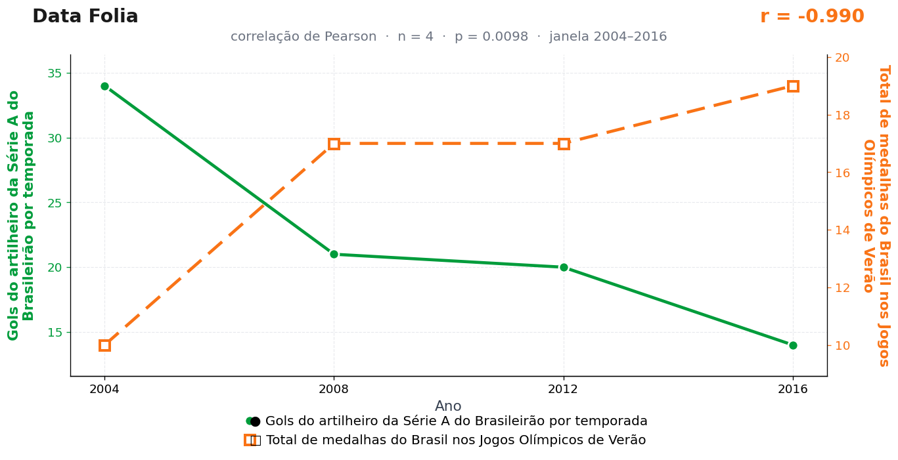

Post de 20/07/2026
A teoria
A alegria esportiva brasileira circula como orçamento público: precisa ser distribuída entre modalidades, temporadas e finais possíveis.
Quando o artilheiro do Brasileirão concentra gols demais, ele puxa para o futebol uma grande fatia dessa energia. Narração, bar, mesa de domingo e replay passam a trabalhar para a rede.
O pódio olímpico recebe o saldo. A cada bola que entra na Série A, uma parte da emoção do país já foi usada. O país comemora muito no gramado e chega mais contido às medalhas.
O COB não respondeu ao nosso pedido de comentário — possivelmente porque nunca o enviamos. A assessoria do artilheiro também não se pronunciou, ocupada que estava roubando o pódio de Paris por antecipação.
A teoria é ficção; a correlação é real: r = −0,99 (n = 4, p = 0,010).
Os dados por trás

- Gols do artilheiro da Série A do Brasileirão por temporada — 4 pontos anuais, período 2004–2016. Fonte: CBF — Brasileirão Série A.
- Total de medalhas do Brasil nos Jogos Olímpicos de Verão — 4 pontos anuais, período 2004–2016. Fonte: Comitê Olímpico do Brasil (COB).
Como as correlações deste site são encontradas — e por que você não deve confiar nelas — está explicado na nossa metodologia.
Por que isso acontece?
Aqui a estatística toda cabe em uma mão: n = 4. Só existem quatro pontos porque só há Olimpíada de quatro em quatro anos, e a janela escolhida vai de 2004 a 2016. Com quatro observações, o coeficiente de Pearson é quase um cara-ou-coroa sofisticado: basta que as duas séries fiquem em ordens opostas — e há boas chances disso ocorrer por puro acaso — para o r sair acima de 0,9.
O p = 0,010 engana pelo mesmo motivo. Com n = 4, o intervalo de confiança de um r estimado é gigantesco: o valor "verdadeiro" da correlação poderia ser quase qualquer coisa, de fortemente negativa a quase nula. Nenhuma conclusão séria sobrevive a uma amostra desse tamanho — e nenhum artilheiro deveria carregar a culpa por Atenas.
Há ainda a escolha da janela: começamos em 2004 e paramos em 2016 porque é aí que o desenho fica bonito. Esticar ou encurtar o período muda o resultado. Quando o analista escolhe onde a série começa e termina, ele participa do resultado mais do que gostaria de admitir.
Post de 20/07/2026 · publicado também no Instagram @datafolia.